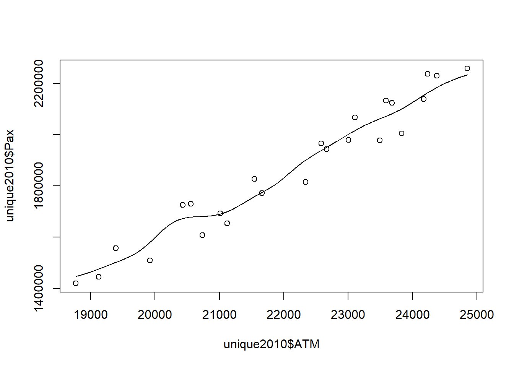
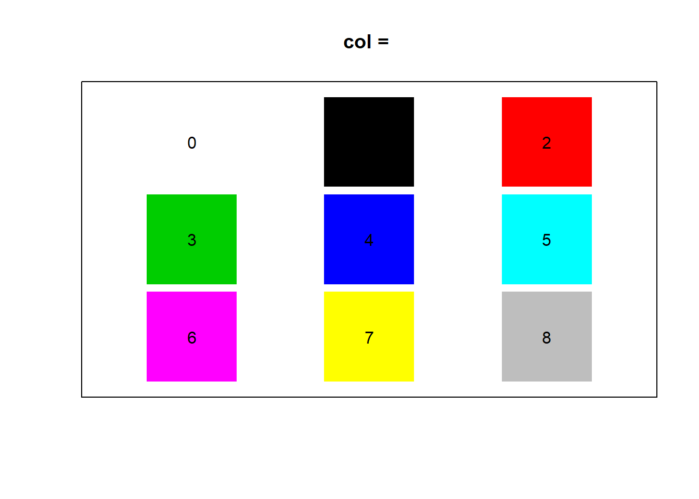

Chapter 9 Plots
9.1 Graphical parameters par()
Good overviews:
- Official Documentation
- Illustrated Documentation
- Book R in a Nutshell: A Desktop Quick Reference
9.1.1 Set graphical parameters
Change global option
change for local plot
When parameters are set, their previous values are returned in an invisible named list. Such a list can be passed as an argument to par to restore the parameter values.
reset default
check current parameter
## [1] FALSEThe parameters are defined for the currently active device
- Normally the Rstudio plot panel
- If
png()orpdf()opend ⇒ only within this document dev.off()closes device and resetpar()- If
png()orpdf()⇒ the sameparare active as they were before the devicepng()orpdf()was opend - If Rstudio panel ⇒ the default
parare active
- If
9.1.2 Default
9.1.3 Device
9.1.4 Device region
Plot outside plotting region
FALSE \(\Rightarrow\) clipped to the plot regions
TRUE \(\Rightarrow\) clipped to the figure region
NA \(\Rightarrow\) clipped to the device region
9.1.5 Coordinate sytem
There are in total 9 coordinate sytems
- absolute
- \((0,0)\) in lower left device corner
inchescan be converted to cm with functioncm()deviceusually in pixels (png) or points (pdf)linesbased onmex(relative to font size)charsbased oncex(font size)
- \((0,0)\) depend on what is plotted
useruser coordinates
- \((0,0)\) in lower left device corner
- normalized
ndcnormalized device coordinatesnicnormalized inner region coordinatesnfcnormalized figure coordinatesnpcnormalized plot coordinates
Figure 9.1: Interval [0, 1] for different normalized coordinate systems
Convert between coordinate system
Use grconvertX() to convert between different coordinate systems
9.1.6 Define device regions
Useful links: Device regions, fig and fin, oma and mgp
9.1.6.1 Split device
Several options (see here)
- array:
par(mfrow = c(2,2))(mfcolfills the array by columns)- use
par("mfg")to plot a specific field in the array
- use
- grid:
layout(matrix()) - arbitrary locations:
par(fig = ...)combined withpar(new=TRUE) split.screen()pairs()coplot()
Example for copy paste
par(mfrow = c(2, 2)) # 2-by-2 grid of plots
par(oma = c(4, 4, 0, 0)) # make room (i.e. the 4's) for the overall x and y axis titles
par(mar = c(2, 2, 1, 1)) # make the plots be closer together
# now plot the graphs with the appropriate axes removed (via xaxt and yaxt),
# remove axis labels (so that they are not redundant with overall labels,
# and set some other nice choices for graphics parameters
plot(runif(10), xlab = '', ylab = '', xaxt = 'n', las = 1, ylim = c(0, 1))
plot(runif(10), xlab = '', ylab = '', xaxt = 'n', yaxt = 'n', ylim = c(0, 1))
plot(runif(10), xlab = '', ylab = '', las = 1, ylim = c(0, 1))
plot(runif(10), xlab = '', ylab = '', yaxt = 'n', ylim = c(0, 1))
# print the overall labels
mtext('x-axis title', side = 1, outer = TRUE, line = 2)
mtext('y-axis title', side = 2, outer = TRUE, line = 2)
Useful helper function
FunNewPar <- function(oma = c(0,0,2,2),
mar = c(4,4,0,0),
tcl = -0.3,
mgp = c(2,0.5,0),
cex.axis = 0.7,
ps = 10,
xpd = NA){
x <- par(oma = oma,
mar = mar,
tcl = tcl,
mgp = mgp,
cex.axis = cex.axis,
ps = ps,
xpd = xpd)
invisible(x)
}Multiple plots with everything
Multiple plots without axis title
Multiple plots without axis


9.1.6.2 Margins
Define margine area using lines coordinate system
Define margine area using inches coordinate system

Define margine area using ndc/nfc coordinate system
par("omd") # Start and endpoint of inner region c(x1, x2, y1, y2)
## [1] 0 1 0 1
par("fig") # Start and endpoint of figure region c(x1, x2, y1, y2)
## [1] 0 1 0 1
par("plt") # Start and endpoint of plot region c(x1, x2, y1, y2)
## [1] 0.1171429 0.9400000 0.2040000 0.8360000
Define region dimensions in inches
par("fin") # Figure dimensions, (width, height)
## [1] 6.999999 4.999999
par("pin") # Plot dimensions, (width, height)
## [1] 5.759999 3.159999
9.1.6.3 Square plot
9.1.7 User coordinates limits
9.1.8 General appearence
9.1.9 Symbols
par("pch") # symbol
## [1] 1
par("cex") # magnifies text/symbols relative to default
## [1] 1
par("col") # symbol color
## [1] "black"
9.1.10 Lines
par("lty") # line type
## [1] "solid"
par("lwd") # line width
## [1] 1
par("col") # line color
## [1] "black"
par("lend") # line end type
## [1] "round"
par("ljoin") # line join style
## [1] "round"
par("lmitre") # detail to ljoin option "mitre"
## [1] 10

9.1.11 Text
par("font") # text font
## [1] 1
par("family") # text font family
## [1] ""
par("cex") # magnifies text/symbols relative to default
## [1] 1
par("ps") # text pointsize
## [1] 12
par("col") # text color
## [1] "black"
par("srt") # string rotation in degrees (°)
## [1] 0
par("lheight") # vertical spacing in multi-line text
## [1] 1Point size of text = ps * cex
Point size of title = ps * cex * cex.main
Size of “lines” (coordinate system) = constant * cex * mex

Get new text families with packet extrafont (see here)
windowsFonts(MyFont = windowsFont("NameFromWord")), however with this way the new font cannot be printed to PDF.
9.1.12 Axis labels
par("font.lab")
## [1] 1
par("cex.lab")
## [1] 1
par("col.lab")
## [1] "black"
par("ann") # should there be any annotations (title, axis title)
## [1] TRUE
par("adj") # axis title position (0: left, 1: right)
## [1] 0.5
par("mgp") # position of 1) labels, 2) tick-mark labels, 3) tick marks (in lines)
## [1] 3 1 09.1.13 Axis
par("font.axis")
## [1] 1
par("cex.axis")
## [1] 1
par("col.axis")
## [1] "black"
par("xaxt") # should there be an axis ("n" suppresses axis)
## [1] "s"
par("las") # orientation of tick-mark labels (0: parallel, 1: horizontal, 2: perpendicular, 3: vertical)
## [1] 0
par("mgp") # position of 1) labels, 2) tick-mark labels, 3) tick marks (in lines)
## [1] 3 1 09.1.14 Ticks
par("mgp") # position of 1) labels, 2) tick-mark labels, 3) tick marks (in lines)
## [1] 3 1 0
par("tck") # length of tick marks (in npc), 1 => grid lines
## [1] NA
par("tcl") # length of tick marks (in chars), negative => look outside plot
## [1] -0.5
par("lab") # ≈ number of ticks per axis (x-axis, y-axis, unimplementent)
## [1] 5 5 7
par("xaxp") # look where ticks are plotted (lower xlim, upper xlim, nr of ticks minus 1)
## [1] 0 1 5
par("xaxs") # "r": xlim +/- 4%, "i": xlim
## [1] "r"
par("xlog") # log x axis
## [1] FALSE9.1.16 Title
9.1.17 R.O. (Read only)
par("cin") # character size (width, height) in inches
## [1] 0.15 0.20
par("cra") # character size (width, height) in pixels
## [1] 28.8 38.4
par("csi") # same as par("cin")[2]
## [1] 0.2
par("cxy") # character size (width, height) in user coordinate system
## [1] 0.02604167 0.06329115
par("din") # device dimensions (width, height) in inches
## [1] 6.999999 4.999999
par("page") # A boolean value indicating whether the next call to plot.new is going to start a new page
## [1] TRUE9.2 Colors
Very well explained here
Specify by:
- Name
- example
col = "black" - possible names:
colors()
- example
- Hexadecimal RGB code
- example
col = "#000000"=> black - format
"#RRGGBB" - RR, GG, BB are hexadecimal digits (00 to FF)
- example
- Index
- example
col = 1=> black - index gives colors position in
palette() palette()can be manipulated- restore default palete with
palette("default")
- restore default palete with
- Special: index 0 is background color
- example
Default palette:

9.2.1 Functions
rgb()- converts RGB to hexadecimal
col2rgb()- converts R colors (hexadecimal, name, index) to RGB
- Function
- example
col = rgb(0,0,0)=> black rgb(),hsv(),hcl(),gray(),rainbow()
- example
9.2.2 Make new palettes
Create a vector of \(n\) continuous colors
9.2.3 Partially transparent colors
Add two more digits to hexadecimal code, which define transparency
#RRGGBBaa
Use alpha() function of package ggplot2